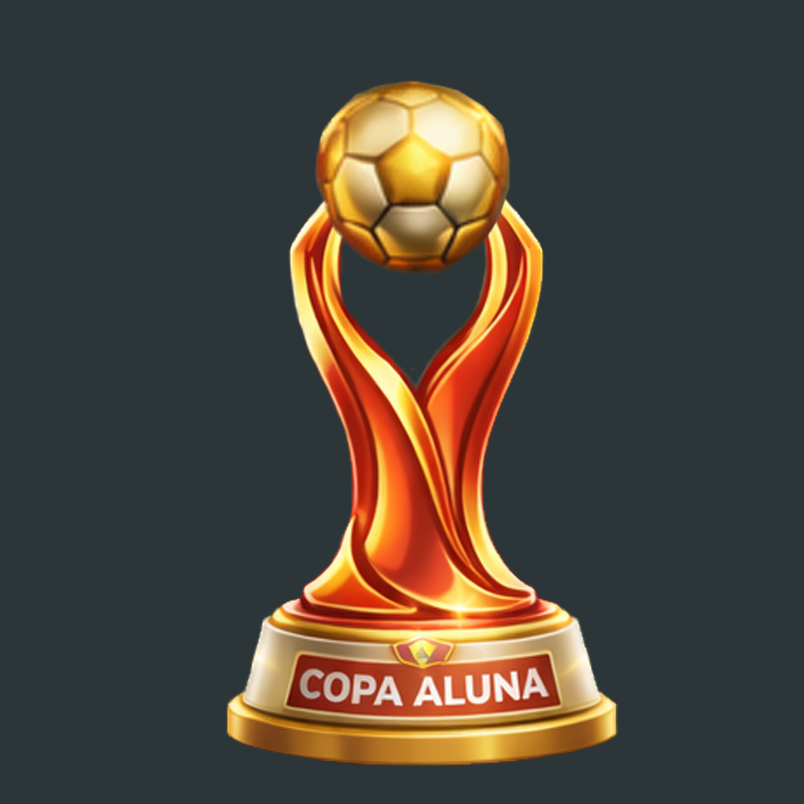

🕒 Copa Aluna ainda não começou
A competição começa na Rodada 16 e vai até a Rodada 19.
Os confrontos serão exibidos quando a Rodada 16 começar.

A competição começa na Rodada 16 e vai até a Rodada 19.
Os confrontos serão exibidos quando a Rodada 16 começar.